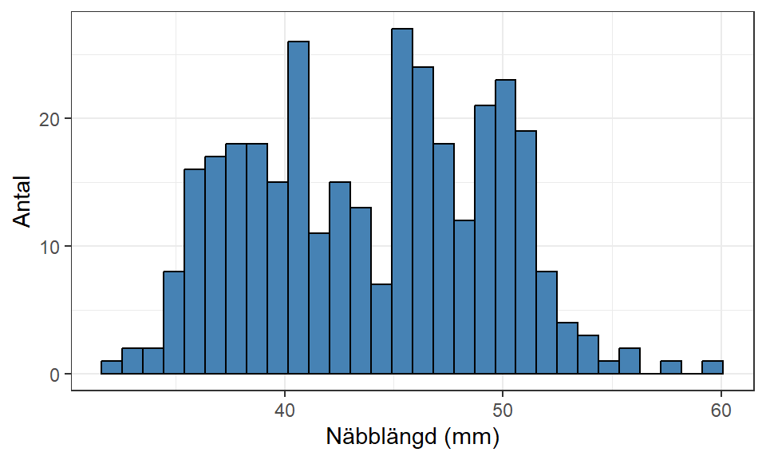

# Glöm inte att installera paketet om du inte har gjort det förut
# install.packages("palmerpenguins")
# Laddar paketet med datamaterialet
require(palmerpenguins)
# Filtrerar bort observationer med saknade värden
penguins <-
penguins |>
filter(!is.na(sex))5 Utforska samband
Det första steget i en regressionsanalys är att utforska datamaterialet. Oavsett om vi genomfört en observations- eller experimentell studie har vi förmodligen innan insamlingen valt ut en responsvariabel som vi vill beskriva eller prediktera med hjälp av andra variabler. Målet med att utforska data är att få insikter som kan hjälpa oss på traven i senare steg, till exempel vilka variabler som är relevanta att inkludera i en modell, hur sambanden verkar se ut, finns det några problem med det insamlade data som behöver korrigeras.
Några punkter som vi behöver få svar på är:
- Vilken typ och skala har variablerna?
- Kring vilka värden förhåller sig variablerna? Minsta och största värde? Läges- och spridningsmått?
- Hur fördelar sig variablerna? Vilken typ av fördelning verkar beskriva variabeln? Normal, likformig, skev?
- Finns det några extremvärden?
När vi fått svar på alla dessa punkter är det mycket lättare att skapa en korrekt modellstruktur och även att utvärdera anpassade modeller. Vi kan undersöka dessa punkter genom enklare funktioner (ex. mean(), min(), summary(variabel)) men vi kan också få relevant information genom enskilda och parvisa visualiseringar av variablerna.
5.1 Pingviner vid Antarktis
Återkommande i underlaget kommer ett insamlat datamaterial från ett forskarteam vid Antarktis användas. Teamet har mellan 2007 och 2009 samlat in information om 333 pingviner vid tre öar runtomkring Palmer Research Station. Datamaterialet kan hämtas via paketet palmerpenguins (Horst, Hill, och Gorman 2020) och läsas in i R via följande kod:
Notera
Som en del av utforskningen kan vi identifiera saknade värden på vissa variabler och väljer att filtrera bort dessa variabler i just detta exempel. Hantering av saknade värden är ett stort fält inom statistiken och det finns flertalet metoder som kan imputera (skatta det saknade värdet) värden så att vi inte behöver ta bort hela observationer från undersökningen.
En enkel imputeringsmetod är medelvärdesimputering där vi byter ut det saknade värdet med medelvärdet av de övriga mätvärdena eller typvärdet ifall en kvalitativ variabel ska imputeras. I praktiken används mer avancerade metoder som kan tillämpas i många olika fall där vi också tar hänsyn till annan information om observationerna.
Vi kan titta närmare på ett urval av datamaterialet i Tabell 5.1.
Visa kod
# Generera en formaterad tabell med hjälp av kable() och formatera den med hjälp av kable_styling()
penguins |>
slice_head(n = 5) |>
kable() |>
kable_styling("striped")| species | island | bill_length_mm | bill_depth_mm | flipper_length_mm | body_mass_g | sex | year |
|---|---|---|---|---|---|---|---|
| Adelie | Torgersen | 39.1 | 18.7 | 181 | 3750 | male | 2007 |
| Adelie | Torgersen | 39.5 | 17.4 | 186 | 3800 | female | 2007 |
| Adelie | Torgersen | 40.3 | 18.0 | 195 | 3250 | female | 2007 |
| Adelie | Torgersen | 36.7 | 19.3 | 193 | 3450 | female | 2007 |
| Adelie | Torgersen | 39.3 | 20.6 | 190 | 3650 | male | 2007 |
Notera
Funktionen kable() kommer från paketet knitr som måste (installeras och) laddas in innan vi kan använda den. Funktionen kable_styling() kommer från paketet kableExtra som på samma vis måste (installeras och) laddas in innan vi kan använda den.
Från tabellen kan vi utläsa följande variabler:
species: Pingvinens art mäts som en kvalitativ variabel och vi kan inte säga att en art är “bättre” eller “större” än någon annan. Vi kan alltså inte rangordna kategorierna och denna variabel följer då en nominalskala.island: Vilken ö pingvinen har befunnit sig på vid mättidpunkten är också en kvalitativ variabel som inte går att rangordna. Därav följer även denna variabel en nominalskala.bill_length_mm: En kvantitativ variabel som mäter längden på näbben i millimeter (mm). Längd är en typisk variabel som följer en kvotskala eftersom det finns en tydlig nollpunkt.bill_depth_mm: Mäter näbbens djup i millimeter och följer samma resonemang som näbblängden.flipper_length_mm: Ytterligare en variabel som mäter en längd, nu längden av pingvinens fena. Samma resonemang som näbbens olika längder kan föras.body_mass_g: Vikt av pingvinen mätt i gram. Även vikt har en tydlig nollpunkt och variabeln anses vara kvantitativ och följa en kvotskala.sex: Pingvinens biologiska kön vilket är en kvalitativ variabel som inte går att rangordna, nominalskala.year: Denna variabel är lite svårare att bedöma då den mäter året då pingvinen är mätt som en numerisk variabel (heltal så R har sparat det som enint), men variabeln i sig behöver inte bedömas vara kvantitativ i denna kontext. Vi går inte in vidare på detta utan för enkelhetens skull kan vi säga att eftersom det går att beräkna differenser mellan åren, (det är 1 år mellan 2007 och 2008) men ingen tydlig nollpunkt finns på skalan, så kan vi anse denna variabel vara en kvantitativ variabel som följer en intervallskala.
Vi kommer fokusera på näbblängden som vår responsvariabel i efterföljande exempel. I och med att datamaterialet är en observationsstudie kommer vi inte kunna dra slutsatser om kausala samband, utan kan endast undersöka korrelationssamband mellan pingvinernas olika egenskaper.
5.2 Visualisera responsvariabeln
Som ett första steg i den explorativa analysen kan vi visualisera fördelningen av responsvariabeln med ett histogram.
Visa kod
ggplot(penguins) + aes(x = bill_length_mm) +
geom_histogram(bins = 30, fill = "steelblue", color = "black") +
theme_bw() +
labs(x = "Näbblängd (mm)", y = "Antal")

Figur 5.1 ger oss en bild av variabelns egenskaper och ifall materialet innehåller några extremvärden som kan vara svåra att plocka upp med en modell. Näbblängden verkar ha en bimodal struktur med två masscentrum vid 38-40 och 50 mm. Vi ser att majoriteten av observationerna ligger mellan ca 35-52 mm men det finns också enstaka observationer omkring 58-60 mm som verkar vara något avvikande stora näbbar.
Att fördelningen inte ser normalfördelad ut spelar ingen roll då vi måste titta på fördelningen av responsvariabeln med avseende på de förklarande variablerna för att kontrollera en regressionsmodells antaganden.
5.3 Parvisa samband
Datamaterialet innehåller ett flertal potentiella förklarande variabler som skulle kunna inkluderas i en modell. Beroende på hur en undersökning gått till kan variabler väljas bort om de inte anses ha ett logiskt samband med responsvariabeln, t.ex. id-variabler är inte relevanta att undersöka. I vårt exempel finns en variabel som beskriver årtal vilket vi i ett första skede kan anta inte har något logiskt samband med näbblängden. Då återstår sex andra variabler som skulle kunna inkluderas i modellanpassningen.
5.3.1 Kvantitativa förklarande variabler
För kvantitativa förklarande variabler kan vi skapa ett spridningsdiagram där varje observation representeras med en punkt. Den förklarande variabeln placeras på x-axeln och responsvariabeln placeras på y-axeln. Med hjälp av punktsvärmen i spridningsdiagrammet kan vi få information om sambandet mellan de två variablerna. Det är fyra huvudsakliga punkter som vi fokuserar på:
- Är sambandet linjärt?
- Är sambandet positivt eller negativt?
- Är sambandet starkt eller svagt?
- Förekommer det några extremvärden?
Visa kod
ggplot(penguins) + aes(x = body_mass_g, y = bill_length_mm) +
geom_point(color = "steelblue") +
theme_bw() +
labs(x = "Kroppsvikt (g)", y = "Näbblängd (mm)")
Figur 5.2 visar att sambandet ser till största del linjärt ut då en konstant förändring (ökning) av kroppsvikt leder till en konstant förändring (ökning) av näbblängden. Majoriteten av punkterna verkar följa denna trend, vilket tyder på ett relativt starkt samband, dock finns det ett flertal observationer (markerade i Figur 5.3) som avviker från detta. Dessa observationer har en lägre kroppsvikt men samma näbblängd som pingviner med en större kroppsvikt och påverkar styrkan av sambandet.
Vi kan beräkna Pearson’s korrelationskoefficient (\(r\)) för att inte behöva förlita oss på den subjektiva tolkningen av styrkan.1 Denna koefficient mäter styrkan på det linjära sambandet mellan två kvantitativa variabler och är ett lämpligt mått i just detta fall. Ett värde nära 0 tyder på inget eller ett svagt samband medan värden nära -1 eller +1 tyder på ett starkt negativt respektive positivt samband.
\[ r = 0.589 \]
Då korrelationskoefficienten är nära 0.6 tyder det på att sambandet är måttligt starkt.
Viktigt
Om spridningsdiagrammet uppvisar ett icke-linjärt och icke-monotont (konstant) samband kommer koefficienten inte beskriva sambandets styrka på rätt sätt. Det är lätt hänt att korrelationskoefficienten används som den enda utforskande metoden då den är enkel att beräkna för flera olika par av variabler, men den kan ofta missa relevant information. Visualisering möjliggör identifieringen av komplexa samband som ofta medför att vi behöver hantera modellen på olika sätt.
Figur 5.2 visar också vissa observationer som skulle kunna anses vara extremvärden. Till exempel skulle \(\{x = ~2700, y = ~47\}\) och \(\{x = ~3700, y = ~58\}\) vara observationer som avviker extremt från det tilltänkta sambandet och andra observationer. Detaljerad analys av extremvärden lämnar vi till senare kapitel, men i ett utforskande syfte noterar vi att vi kan ha observationer som kommer påverka modellanpassningen.
Sammanfattningsvis kan vi säga att sambandet mellan kroppsvikt och näbblängd är:
- linjärt,
- positivt,
- måttligt starkt,
- med ev. några extremvärden.
När vi ska skapa vår första modell kommer det nog räcka med att inkludera en enkel \(\beta_1 \cdot \text{kroppsvikt}\) term i modelleringen.
5.3.1.1 Övriga kvantitativa variabler
Samma utforskning bör genomföras för alla par av variabler, i detta fall också näbbredd och fenlängd:

Båda variablerna ser ut att ha linjärt samband med responsvariabeln. Figur 5.4 tyder på att sambandet mellan näbbredd och näbblängd är svagt negativt (\(r = -0.229\)) då punkterna är mycket utspridda medan Figur 5.5 tyder på ett lite starkare positivt samband (\(r = 0.653\)) i linje med Figur 5.2.
Ett nytt fenomen som vi kan se i Figur 5.4 är att vi verkar ha flera punktsvärmar som var och en har ett positivt samband trots att vi tolkade det övergripande sambandet som svagt negativt. Om vi endast hade beräknat korrelationskoefficienten hade detta fenomen undgått vår analys. Figur 5.6 är ett exempel på Simpson’s Paradox som vi kommer undersöka närmare senare i detta underlag.
5.3.2 Kvalitativa förklarande variabler
Vi kan inte använda spridningsdiagram för att visualisera sambandet mellan kvalitativa förklarande variabler och en kontinuerlig responsvariabel. Vi behöver istället använda visualiseringar som tar hänsyn till den kvalitativa skalan, vanligtvis ordinal eller nominalskala. Det finns flera olika sätt att visualisera fördelningen av responsvariabeln för de olika nivåerna av den förklarande, till exempel grupperade histogram eller lådagram, men en typ av visualisering som visar detaljerna i fördelningen är ett fioldiagram. Ett fioldiagram består utav en spegling av ett densitetsdiagram, där områden med många observationer har en större yta under kurvan.
Via ggplot2 kan vi skapa ett sådant diagram genom geom_violin():
Visa kod
ggplot(penguins) +
aes(x = species, y = bill_length_mm) +
geom_violin(fill = "steelblue") +
theme_bw() +
labs(x = "Art", y = "Näbblängd (mm)")
Figur 5.7 visar att Adelie-pingviner överlag har en kortare näbblängd jämfört med Chinstrap och Gentoo då fördelningens mittpunkt förhåller sig kring 38-40 mm. Chinstrap-pingviner har en något större andel pingviner med en längd större än 50 mm medan Gentoo har en större andel med en längd mindre än 50 mm.
Figur 5.8 har en liten annorlunda form, med två stora massor för respektive kategori. Här har vi förmodligen en indikation på att kön inom de olika arterna har en påverkan och att hanar generellt har en större näbblängd än motsvarande honor av samma art.

Figur 5.9 antyder att pingviner på ön Torgersen har en mindre näbblängd än vid övriga öar, men här behöver vi resonera huruvida denna variabel faktiskt beskriver sambandet eller om det finns något annat fenomen som kan förklara samma sak, till exempel om en ö endast har pingviner av en viss art. Mer om dessa sorters samband kommer senare i underlaget.
Slutsatsen från dessa visualiseringar är att det verkar finnas ett samband mellan art och kön med näbblängd och de två variablerna bör inkluderas i modellen. Vi behöver nu fundera på hur vi på ett lämpligt sätt kan inkludera en kvalitativ variabel innehållande text i en matematisk modell som kräver siffror.
5.4 Övningsuppgifter
Använd datamaterialet marketing som går att hämta via:
devtools::install_github("kassambara/datarium")
data("marketing", package = "datarium")Datamaterialet innehåller tre variabler som beskriver reklambudget för YouTube, Facebook och nyhetstidningar (tusentals dollar) samt försäljningen (tusentals enheter). Vi vill modellera sambandet mellan försäljningen och de tre reklamkällorna.
- Undersöka variablernas typ och skala.
- Sammanställ beskrivande statistik för respektive variabel.
- Visualisera fördelningen av respektive variabel.
- Skapa ett spridningsdiagram för varje förklarande variabel med responsvariabeln och tolka de utefter de fyra bitar information som ett spridningsdiagram visar.
- Sammanfatta dina iakttagelser och motivera vilka förklarande variabler som bör inkluderas i en modell och hur de bör struktureras.
Horst, Allison Marie, Alison Presmanes Hill, och Kristen B Gorman. 2020. palmerpenguins: Palmer Archipelago (Antarctica) penguin data. https://doi.org/10.5281/zenodo.3960218.
Kendall, Maurice G. 1955. Rank correlation methods, 2nd ed. Oxford, England: Hafner Publishing Co.
Spearman, C. 1904. ”The Proof and Measurement of Association between Two Things”. The American Journal of Psychology 15 (1): 72–101. http://www.jstor.org/stable/1412159.
Eller andra mått för att beräkna styrkan på samband, t.ex. Kendall (Kendall 1955) eller Spearman (Spearman 1904).↩︎